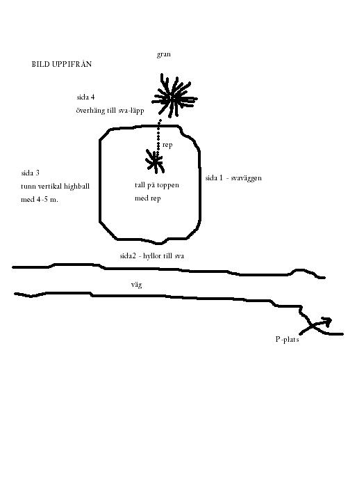
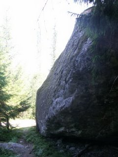
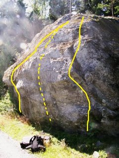
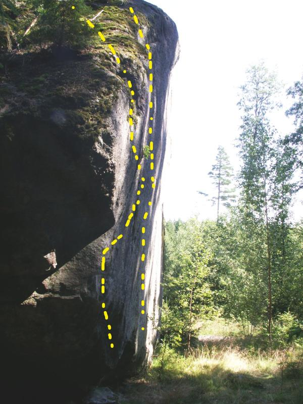
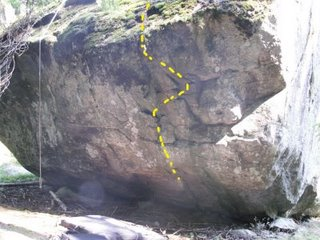

Lat: 59.551025 Long: 12.832031
Ett mytiskt jättekast av rang. Uppskattningsvis 4-5 meter högt och lustigt nog finns alla klätterelement (sva, vertikal, överhäng) på en och samma sten.
Mer uppdaterad förare finns på www.27crags.com Detta då problem uppstod vid uppdatering av denna förare.
Överlag platta och fina landningar. Endast någon liten sten, stubbe eller sly som stör.
Troligtvis har stenen fått klätterbesökare förut, men detta har inte kunnat verifieras. Rätta gärna direkt på sidan om problemens namn, grader osv inte stämmer.
När jag var där passade jag på att samtala med markägaren Nils som bor i änden på grusvägen. Han inte bara gav sitt medgivande utan uppmuntrade också besök och klättring. Jag skulle tom. få låna stegar om jag behövde ta mig upp. Han berättade också att han hade några block på gården dit jag var välkommen. Jag var uppe och kikade, men de jag såg var inte intressanta.
Storleken på stenen gör att många olika problem av olika karaktär går att etablera. Gissningsvis finns utrymme att skapa 10-15 enskilda problem. Nyturspotentialen är stor och stenen kategoriseras därför som oklättrad för den som är på jakt.
På toppen av stenen växer en liten tall. I denna har man fäst ett gammalt rep/tamp som turister o.dyl har använt för att med hjälp av den intilliggande granen ta sig upp på stenen. Status på repet är såklart okänt, men det kan med fördel användas vid nedstigning. Nedstigning kan annars visa sig problematiskt och att ta med ett eget rep för att fästa någonstans är ingen dum idé.
Observera att stenen är en sevärdhet i området och får regelbundna besök. Länsstyrelsen har även kategoriserat den som en fridlyst historia av något slag. Agera därefter!
Stenen ligger mestadels i skugga hela dagen. Baksidan (överhänget) och toppen kan därför vara extra fuktig flera dagar efter regn. Var uppmärksam på halkig mossa när du är på väg uppför svaiga utsteg och vid nedstigning! Flera gånger mer kruxigt än klättringen upp.
<div style="width: 355; float: right; margin-left: 10px; padding: 3px; border: solid 1px #cccccc;">
<googlemap version="0.9" lat="59.551025" lon="12.832031" type="map" zoom="10" scale="yes" overview="yes"> 59.515426, 12.846451, Avelbolsstenen </googlemap>
</div>
Från Arvika:
Kör ut från Arvika längs väg 175 mot Klässbol och Säffle. Efter inte fullt 2 mil kan man svänga av höger mot Klässbol. Efter några hundra meter till kan man än en gång svänga ner höger mot Klässbol. I denna "4-vägskorsning" sväng istället vänster mot Värmskog, Avelsbol eller vad det nu kan tänkas stå på skyltarna. Fortsätt på denna väg utan att svänga av från den asfalterade vägen i ungefär 8 km. Håll utkik efter en fornminnesskylt som pekar upp åt höger. Om du når en t-korsning och tittar ut över en sjö, så har du kört ända till Värmskog. Leta i så fall upp Liljenäs café och smaka deras underbara räkmackor (den med färska räkor). Vänd sedan om och fortsätt leta.
Från Karlstad:
Kör från Karlstad längs E18 mot Oslo. Vid rondellen vid Grums (Burgerking och OK-macken) ta höger mot Grums Centrum. Innan du når centrum sväng höger (i höjd med ridskolan och en hamburgerkiosk) mot Värmskog. Följ denna väg någon kilometer. Sväng än en gång höger mot Värmskog tätt följt av ytterligare en vänstersväng mot Värmskog. Kör över bron till Värmskog och fortsätt köra igenom denna. I en vänstersväng runt sjön lilla värmeln sväng upp höger mot Klässbol, Avelsbol eller vad det kan tänkas stå på skylten. I svängen finns en liten brandstation. Följ denna väg ungefär en mil tills du ser ett minnesmärke som pekar upp åt vänster. Kommer du fram till en t-korsning har du kört alldeles för långt. Vänd om och gör rätt.
Parkering
Parkera på en liten ficka strax innan stenen.
Se bilder nedan om stenens utseende.
Heldragna linjer = gjorda problem
Streckade linjer = projekt... mer eller mindre framputsade.
Hårt ansatt av lav och mossa som blivit ett med berget. Inga tydliga grepp, men det finns säkert något litet under mossan som räcker. Kan bli en del kul balansiga leder med helkroppskontakt mot klippan. Möjligen finns något att göra där sida 1 möter sida 4.
Snällare med hyllor på vertikalen som övergår i sva. Visa total hänsyn vid klättring på denna sida, då vägen går precis bredvid stenen.
Stenens högsta sida/vägg med full höjd på gissningsvis 4-5 meter. Om någon lyckas ta sig upp på denna helt platta vägg, så ska jag vara den första att göra hatten av. Väggen är helt slät med mikroskopiska utbuktningar. Highball och riktig testpiece.
[[Bild:Climbing-sida3.jpg|center|thumb|300px|--
Sören
på highball-sidan ]]
Ganske kraftigt överhängande med primärt dåliga grepp till svaig läpp och usteg. Testpiece!
Kategori:bouldering
Kategori:oklättrat
Kategori:sva
Kategori:vertikalt
Kategori:överhäng
Kategori:Värmland
Copyright (C) Permission is granted to copy, distribute and/or modify this document under the terms of the GNU Free Documentation License, Version 1.3